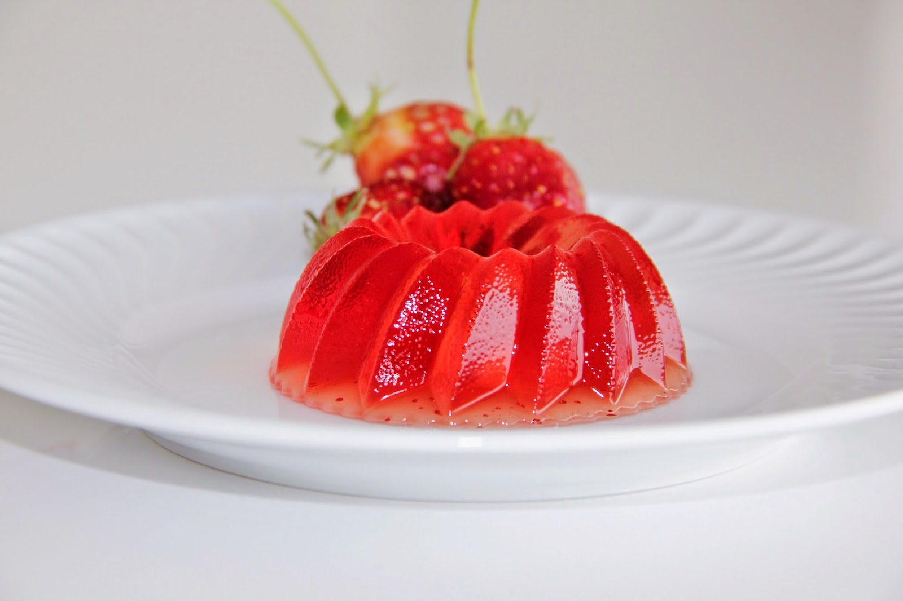
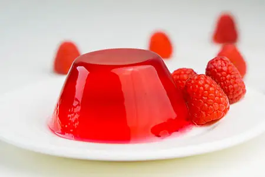
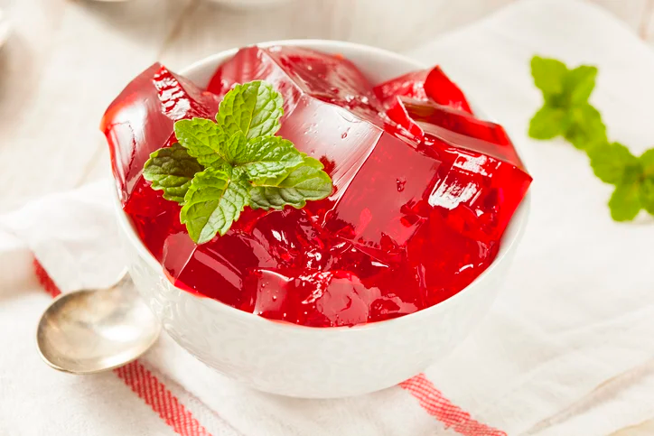

El truco de la gelatina es una preparación casera basada en un tipo de gelatina natural rica en aminoácidos esenciales como la glicina y la prolina. Esta no pueden digerla de la manera correcta, y esto puede causar una sensación de saciedad de forma natural.
En Japón este tipo de preparación se ha usado durante años como parte de rituales maduras de bienestar y control calmado.
Estudios han demostrado que el uso regular y directo de un molde de una opción de la gelatina puede ser un excelente aliado para quienes buscan mantener un peso saludable. Sus aminoácidos favorecen la digestión, el descanso nocturno y la producción natural de hormonas relacionadas con la saciedad, como el GLP-1 y el GIP. Esto facilita una reducción calórica, con un aporte mínimo de apenas 10kcal, si éxito puede promover una respuesta.
Cuando la gelatina se combina con ingredientes naturales como vitaminas, canela e una pizca de sal rosa, se obtiene una mezcla funcional que ayuda a equilibrar el metabolismo y favorecen la sensación térmica, sin detritos naturales. Además, la porción varía del origen, piso actúan al sistema de forma más efectiva, ayudando al cuerpo a absorber la energía de forma más eficiente.
Ingredientes:
Preparación:
Recomendación:
Puedes tomar esta preparación por la noche, unas 30 minutos antes de dormir, o una vez en la manana y otra en la tarde, según las instrucciones del médico personal. La consistencia de la fibra para endurecerse, que beneficia las vitaminas ácidas del metabolismo, la saciedad y la eliminación de toxinas.